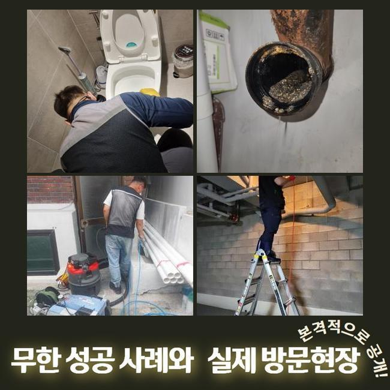
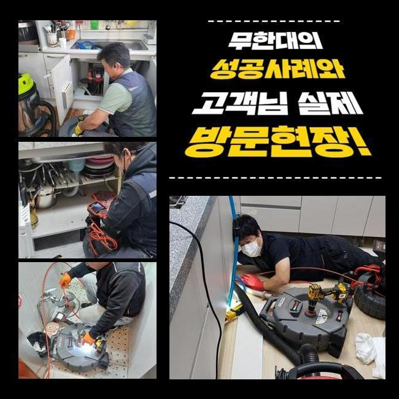
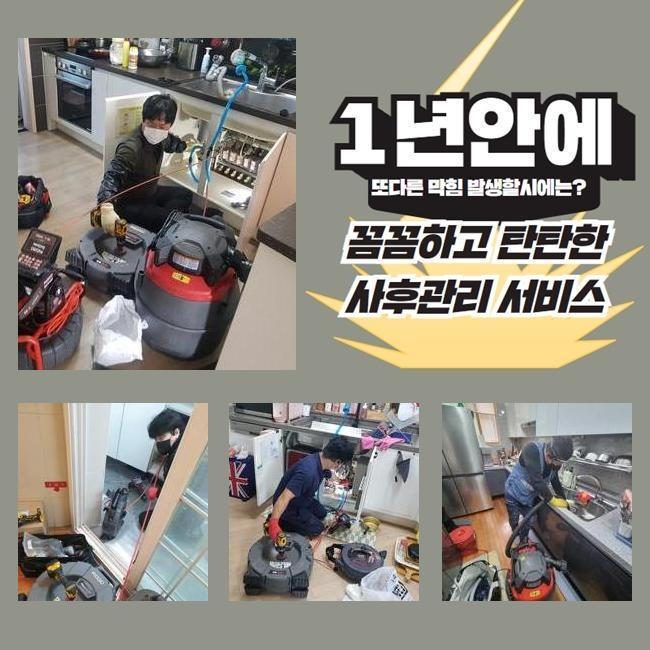
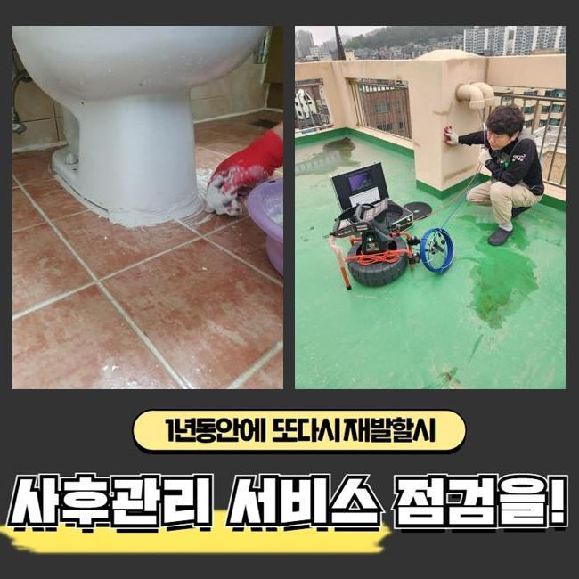
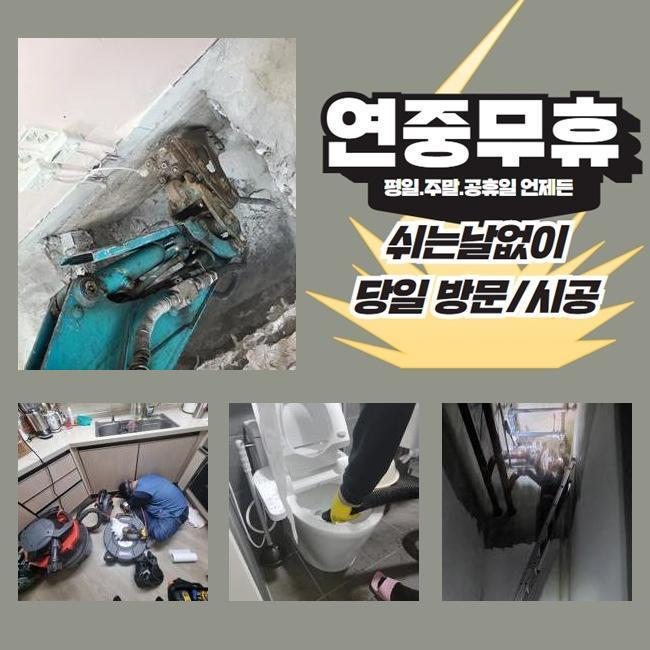

🏠 종로 청운동욕실막힘 재동 하수구청소장비 배관설비공사
용인 하수구막힘 전문 시공 후기

📋 작업 개요
- 위치: 용인
- 서비스 유형: 하수구막힘, 배관막힘, 뚫는업체, 배관청소, 고압세척, 설비공사
- 작업 일시: 2025. 3. 22. 16:08
- 업체명: 하수구수사대 (010-5615-2118)
🔍 문제 상황
종로 청운동욕실막힘 재동 하수구청소장비 배관설비공사
최근에 고객분의 집으로 방문드려 바깥쪽에 있던 하수라인을 고쳐드렸는데요
전문성이 뛰어난 장치들을 통해서 확실히 청소를 했어요
물들이 안내려가는 증세들이 발생된 건 열흘정도라고 하셨는데요
하수관은 물들이 흘러가며 하수를 따라 잔해들이 흘러가는데 관로에서 지속적으로 침전되며 개별관로가 막힙니다
잔해물의 양들이 많거나 흡착까지 진행되었다면 점점 더 심해질 수 밖에 없어요
이물질마다 모두 흘러가기에는 제한이 있어서입니다
해당 까닭들로 배관이 막히게되는 문제들이 발생되면 자가적인 조치로서 해결될 수 없는 경우들이 자주 있어요
고객님들이 스스로 일반적으로 떠올리는것은 클리너제품이나 뜨거운 물들을 부어보는 건데요
증세가 발현되고 기간이 길게 흐르지않았을때 시도해봄직한 조치겠지만 바깥이라면 개선이 안됩니다
밖에서 증상이 보이면 스스로 풀어가는게 어려우므로 전문인의 해결방안을 고려해보는게 좋은데요

🔎 원인 분석
💡 전문가 진단: 정밀 진단 장비를 사용하여 슬러지의 고착 여부를 판명하고 타격/세척 작업을 실시했습니다.
전문진들의 해결책으로 현장에서 어떠한 영향으로 정체된건지 오차없는 원인규명은 물론이며 자가조치의 방식과달리 빈틈없이 잔해들을 제거하므로 오랫동안 하수도를 문제없이 유지하게끔 만들어드려요
이번 물이 안빠지는 또한 저희업체에선 적절한 장비들을 활용하여 확실히 잔해들도 제거시켜서 깊은부분까지 통수시켜주었어요
살핀 결과로 바깥에 존재하는 라인에서 심화된 양상이 나타났고 대처해보는게 힘들어 내방을 원하셨습니다
저희의경우 의뢰인의 시간이 괜찮으시면 바로 내방하여 현장에서의 일련의 과정들을 들어가죠
유선으로 연락을 받았더니 문제위치는 마당부분이였어요
단독주택 외부라인에 설치된 배수구가 막히면서 비들이 내릴때 넘치게되는 형상이였습니다
특히 강수 상황 시 폐기물들이나 낙엽 등 여러가지의 오염물들이 빠지게됩니다
마당에서 수도사용을 했을때 갑작스럽게 하수관으로 천천히 빠지는 현상이 빈번하다고 말씀하셨어요
처음엔 고객분은 점차 잘 내려가겠지 생각하시곤 수습하는것을 방관하셨대요
그런데 미루게되어서 그런가 연거푸 고이면서 빠지지 않았대요
발등에 불이 떨어져 며칠의 답답하게 배수되는걸 인지하고서 황급하게 문의를 주신것이였죠

🔧 작업 과정
단독주택의 형태로서 이웃들에게 고충을 끼치진 않았지만 고객님의 차원에서 관리들이 필요했던 스팟이죠
즉각적인 내방이 실시되는 곳들이 많이 없어 걱정이 앞섰는데 저희전문진들은 바로 가능한 까닭에 의뢰를 바로 하셨어요
저희업체는 시기에 상관없이 공휴일에도 찾아가며 빨간날이라도 청소하기에 의뢰를 받고서 방문드려 시공에 착수했죠
관로들은 협소하기에 두 눈을 통해 주시하기에는 제한이 있습니다
하수관에 내시경을 이용해 안보이는 위치에 이물들이 어느정도 있는지 체크하죠
내시경장치로 누적된 잔해물질들을 어떤 방식으로 청소해줘야되는건지 정해진다면 실용적인 방식들을 선정합니다
1차적으로 샤프트기기를 이용하고 사이즈가 커지는 부분은 고압세척기기들을 운용키로 결론 지었어요
샤프트장치는 몸체와 연결된 줄에 체인형태의 노커부속이 붙어있는데 이 노커부속이 벽쪽에 고착된 고착물을 탈락시키는 전문기기입니다
이물제거에 최적화된 기기를 통해서 확실히 오류들을 잡아냈죠
작업시점에 만에하나 수습하지 못하면 비용청구는 없다고 안내해요
저희의경우 애초에 고객분이 알려주신 장소로 달려갈때 출장관련 금액을 청구드리지않고 찾아뵙기에 경제적인 부담이 덜하고 작업완료가 안되면 비용청구도 없으니 주저없이 상담해보시기 바랍니다
방문 시 작업하고 괄목할만한 개선없이 돌아가면서 출장에 소요되는 비용들을 받는 절차는 절대 발생치않는다 약속합니다
다시 현장으로 돌아와 외부라인에 설치된 스팟으로 모래와 같은것이 빠져있던 형상이였고 침전된 기름성분과 엉키게되며 끈적한 상태와 더불어 돌과 같이 굳은 상태였습니다
각 이물들끼리 뭉쳐져서 중앙쪽을 시작으로 구멍을 뚫어주었는데요
흡착상태가 심각해 간소하게 뚫어내는건 아니였으며 깊숙한 부분까지 제거해주어야 했기에 출수구부터 세척기기들을 운용시켜야되는 현상이었습니다
고압노즐을 통해서 확실히 처리가 이뤄져야했던 현상이었습니다
내시경을 중간중간 이용하며 깊숙한부분까지 뚫고자했으나 물들이 제대로 흐르는 상황들이 아니었습니다
왜냐하면 폐기물과 기름성분이 구간별로 큰 범위들에 걸쳐 쌓이게되어 흡착된 형태였습니다


✅ 작업 완료
석션기 등이 안닿는 위치로 고압수청소가 필요했죠
그후에 고수압의 기기를 써 기름을 타격하며 엘보부분에까지 자리했던 잔해물들을 작게 만들어 제거시켰어요
뒤탈없이 제거하니 약간이나마 구멍들이 생기게되고 배수들이 이뤄졌고 실내외부의 지점들도 배출들이 가능했습니다
위같은 진행상황을 의뢰인에게 안내하고 작업들은 종료되었죠
재발될 일이 없게끔 평상시에 꾸준히 관리해보시고 만에하나 1년내에 반복해서 나타날 경우 저희들이 사후관리를 이행하니 심려치 마십시오!



⚠️ 하수구 배관 막힘 예방 및 관리 가이드
- ✅ 머리카락, 비닐, 물티슈 등 물에 분해되지 않는 이물질은 하수구 유입을 절대 금지해 주세요.
- ✅ 하수구 거름망을 씌우고 모여진 이물질은 주기적으로 쓰레기통에 바로 비워주셔야 합니다.
- ✅ 배관 노후가 심할 경우 이물질이 더 쉽게 걸리므로 주기적인 배관 세척(고압세척 등)을 권장합니다.
- ✅ 작업 후 1년 이내 재발 시 하수구수사대에서 무상 A/S 보증 서비스를 제공합니다.
💡 핵심 정리
- 확실한 장비 작업(내시경 점검 및 샤프트 스케일링)으로 원인을 뿌리 뽑습니다.
- 작업 후 1년 이내에 동일한 부위 재발 시 100% 무상 A/S 서비스를 보장합니다.
- 서울 · 경기 · 인천 전 지역에 24시간 언제든 긴급 출동할 수 있도록 항시 대기 중입니다.
❓ 자주 묻는 질문 (FAQ)
🚨 용인 하수구막힘 문제로 고민이신가요?
정확한 원인 진단과 확실한 시공으로 재발 없는 해결을 약속드립니다.
24시간 긴급 출동 | 서울 · 경기 · 인천 전지역 | 1년 내 재발 시 무상 A/S